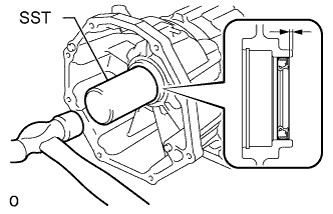

САЛЬНИК ПЕРЕХОДНИКА РАЗДАТОЧНОЙ КОРОБКИ > ЗАМЕНА |
| 1. СНИМИТЕ РАЗДАТОЧНУЮ КОРОБКУ В СБОРЕ |
Снимите раздаточную коробку (Нажмите здесь).
| 2. СНИМИТЕ ЗАДНИЙ САЛЬНИК ПЕРЕХОДНИКА КАРТЕРА РАЗДАТОЧНОЙ КОРОБКИ |
С помощью SST выбейте сальник.
| 3. УСТАНОВИТЕ ЗАДНИЙ САЛЬНИК ПЕРЕХОДНИКА КАРТЕРА РАЗДАТОЧНОЙ КОРОБКИ |
Покройте кромку нового сальника трансмиссионной жидкостью.
|  |
С помощью SST и молотка установите сальник.
| 4. УСТАНОВИТЕ РАЗДАТОЧНУЮ КОРОБКУ В СБОРЕ |
Установите раздаточную коробку (Нажмите здесь).